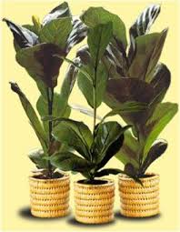
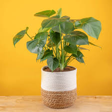

Nos plantes

Ficus Lyrata
Le Ficus Lyrata est une plante d'intérieur populaire avec de grandes feuilles en forme de violon. Il purifie l'air et ajoute une touche tropicale à votre intérieur.
Prix : 45 €
Langue des plantes : Symbole de prospérité et de santé.

Monstera Deliciosa
La Monstera est connue pour ses grandes feuilles perforées. Elle pousse rapidement et peut transformer n'importe quelle pièce en une oasis de verdure.
Prix : 35 €
Langue des plantes : Représente le bonheur domestique et l'équilibre.
Lavande
La lavande est idéale pour une touche de couleur et de parfum. Elle est réputée pour ses propriétés apaisantes et calmantes.
Prix : 25 €
Langue des plantes : Symbole de paix, de calme et de sérénité.